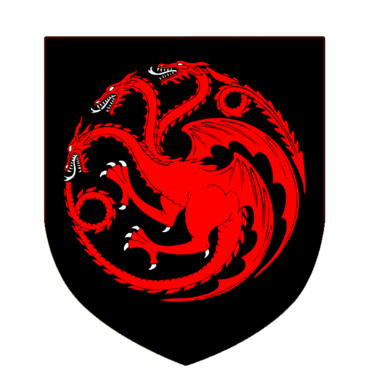
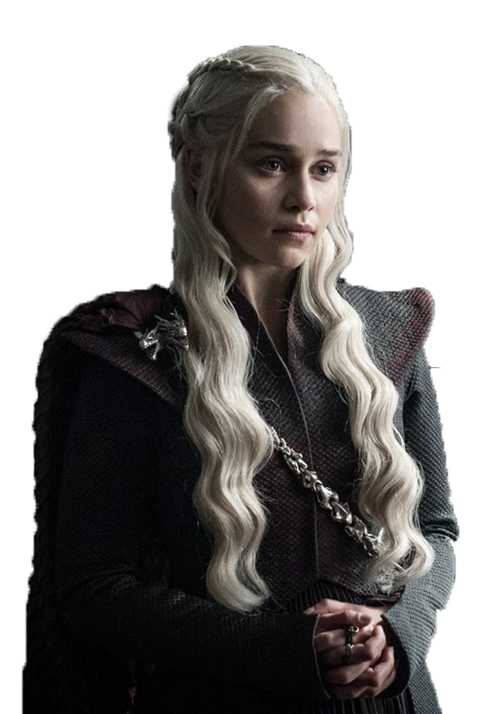

La Casa Targaryen
La Casa Targaryen es una familia noble ficticia perteneciente a la saga de literatura fantástica Canción de hielo y fuego. Los Targaryen escaparon de la destrucción de Valyria para asentarse en Rocadragón, desde donde Aegon I conquistó Poniente. A partir de este acontecimiento gobernaron como reyes durante casi 300 años. Estaban instalados en la capital del reino Desembarco del Rey y en la isla-castillo de Rocadragón. Su escudo es un dragón de tres cabezas de gules arrojando llamas en campo de sable, y su lema es "Fuego y sangre".
Daenerys Targaryen
La reina Daenerys Targaryen, también llamada Daenerys de la Tormenta, La que no Arde, Rompedora de Cadenas, Madre de Dragones y, de manera más informal, Dany, es la hija menor del rey Aerys II Targaryen y su hermana esposa, la reina Rhaella. Tras la Guerra del Usurpador, durante la que murieron sus padres y su hermano mayor Rhaegar, ella y su hermano Viserys vivieron en el exilio en varias Ciudades Libres.